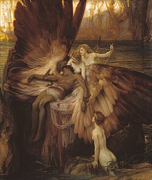
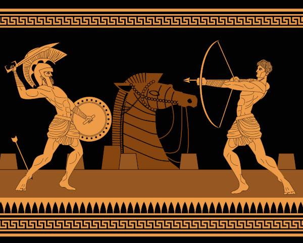

A história de Ícaro é uma das mais simbólicas da mitologia grega e uma das mais diretas sobre ambição.
Ícaro era filho de Dédalo, um grande inventor. (Dédalo também participou no mito da criação de minotauro, saiba mais) Os dois estavam presos em uma ilha sem possibilidade de fuga.
Para escapar, Dédalo criou asas feitas de penas e cera. Antes de partirem, ele deu um aviso claro ao filho: não voar muito baixo, para não molhar as asas no mar e nem muito alto, pois o calor do sol poderia derreter a cera. Mas, ao sentir a liberdade de voar, Ícaro se deixou levar pela empolgação.
Ignorando o aviso do pai, ele subiu cada vez mais alto. Fazendo com que o sol derretesse a cera de suas asas.

Ícaro caiu no mar e morreu.
- Mitos GregosVolte ao Mito de Troia:

Saiba mais:
Mito de ÍcaroSite Sobre Mitologia Grega Criado para Trabalho de Interfaces Web